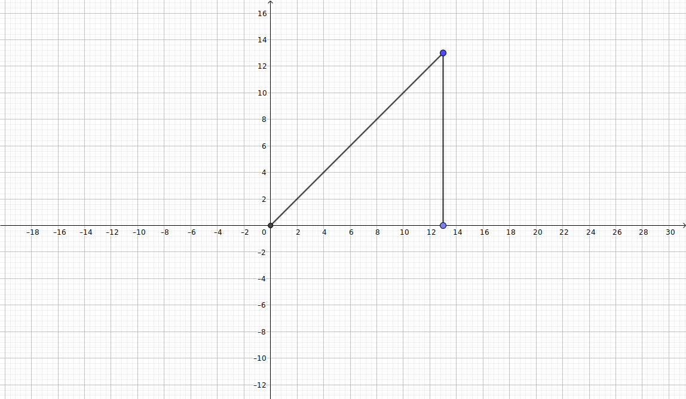
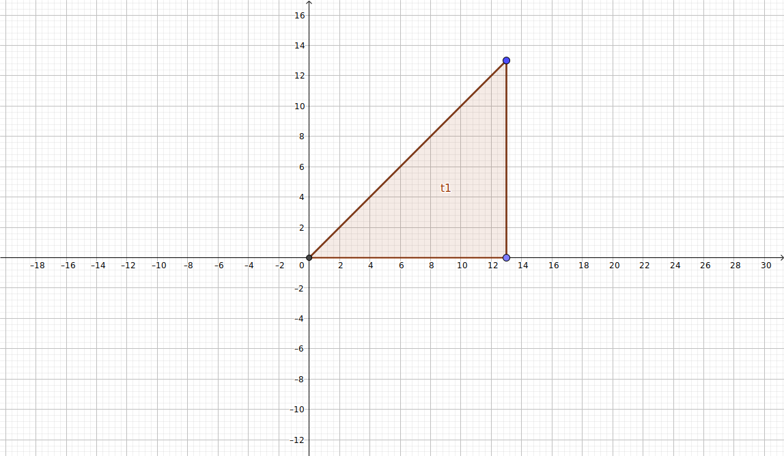
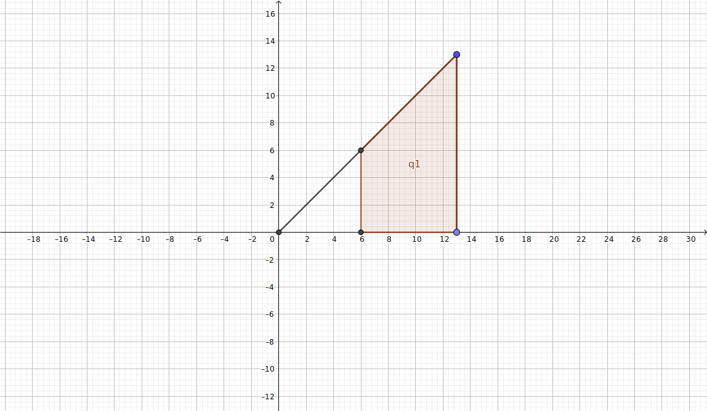
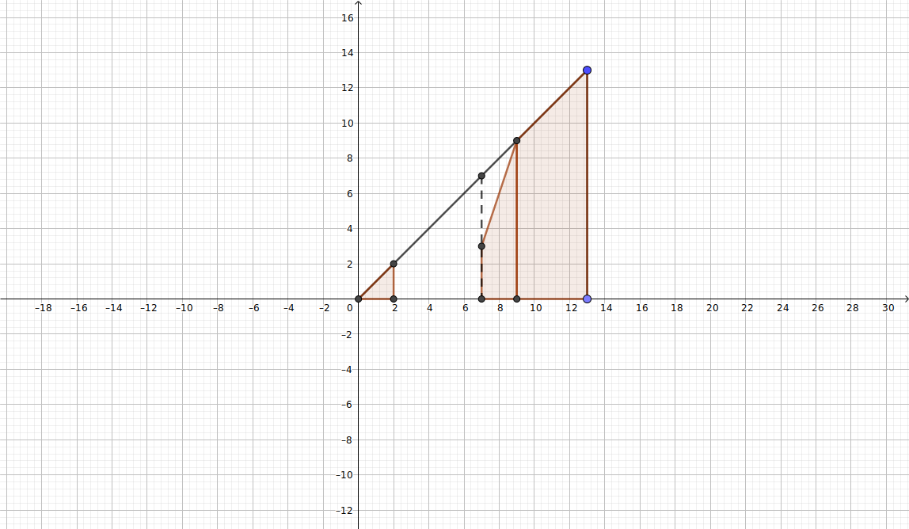

比赛链接
题号 标题 做法 A Game Euler函数 B Strawberry 贪心 C Circle 均分纸牌 / 货仓选址
给定n n n 1.. n 1..n 1 . . n 2 2 2 2 2 2
举例说明, 例如n = 5 n=5 n = 5
( 1 , 2 ) ( 3 , 4 ) ( 1 , 2 ) ( 3 , 5 ) ( 1 , 2 ) ( 4 , 5 ) ( 1 , 3 ) ( 2 , 4 ) ( 1 , 3 ) ( 2 , 5 ) ( 1 , 3 ) ( 4 , 5 ) ( 1 , 4 ) ( 2 , 3 ) ( 1 , 4 ) ( 2 , 5 ) ( 1 , 4 ) ( 3 , 5 ) ( 1 , 5 ) ( 2 , 3 ) ( 1 , 5 ) ( 2 , 4 ) ( 1 , 5 ) ( 3 , 4 ) ( 2 , 3 ) ( 4 , 5 ) ( 2 , 4 ) ( 3 , 5 ) ( 2 , 5 ) ( 3 , 4 ) \def\c#1{\color{cyan}{ #1}} \def\m#1{\color{magenta}{ #1}} \begin{matrix} \m{(1,2)}&\m{(3,4)}\\ \m{(1,2)}&\m{(3,5)}\\ \m{(1,2)}&\m{(4,5)}\\ \m{(1,3)}&\c{(2,4)}\\ \m{(1,3)}&\m{(2,5)}\\ \m{(1,3)}&\m{(4,5)}\\ \m{(1,4)}&\m{(2,3)}\\ \m{(1,4)}&\m{(2,5)}\\ \m{(1,4)}&\m{(3,5)}\\ \m{(1,5)}&\m{(2,3)}\\ \m{(1,5)}&\c{(2,4)}\\ \m{(1,5)}&\m{(3,4)}\\ \m{(2,3)}&\m{(4,5)}\\ \c{(2,4)}&\m{(3,5)}\\ \m{(2,5)}&\m{(3,4)}\\ \end{matrix} ( 1 , 2 ) ( 1 , 2 ) ( 1 , 2 ) ( 1 , 3 ) ( 1 , 3 ) ( 1 , 3 ) ( 1 , 4 ) ( 1 , 4 ) ( 1 , 4 ) ( 1 , 5 ) ( 1 , 5 ) ( 1 , 5 ) ( 2 , 3 ) ( 2 , 4 ) ( 2 , 5 ) ( 3 , 4 ) ( 3 , 5 ) ( 4 , 5 ) ( 2 , 4 ) ( 2 , 5 ) ( 4 , 5 ) ( 2 , 3 ) ( 2 , 5 ) ( 3 , 5 ) ( 2 , 3 ) ( 2 , 4 ) ( 3 , 4 ) ( 4 , 5 ) ( 3 , 5 ) ( 3 , 4 )
其中每一行即为一种取法, 品红色 的数对为互质的, 青色 的数对为不互质的
答案即为品红色 数对个数除以行数
即
( n − 2 ) ! 2 ⌊ n 2 − 1 ⌋ ⌊ n 2 − 1 ⌋ ! ∑ i = 1 n φ ( n ) n ! 2 ⌊ n 2 ⌋ ⌊ n 2 ⌋ ! = ⌊ n 2 ⌋ ∑ i = 1 n φ ( n ) ( n 2 ) = ∑ i = 1 n φ ( n ) n − [ 2 ∣ n ] \begin{aligned} &{ {(n-2)!\over 2^{\lfloor{n\over2}-1\rfloor}\lfloor{n\over2}-1\rfloor!}\sum_{i=1}^n\varphi(n)\over{n!\over 2^{\lfloor{n\over2}\rfloor}\lfloor{n\over2}\rfloor!}}\\ =~&{\lfloor{n\over2}\rfloor\sum_{i=1}^n\varphi(n)\over {n\choose2}}\\ =~&{\sum_{i=1}^n\varphi(n)\over n-[2\mid n]} \end{aligned} = = 2 ⌊ 2 n ⌋ ⌊ 2 n ⌋ ! n ! 2 ⌊ 2 n − 1 ⌋ ⌊ 2 n − 1 ⌋ ! ( n − 2 ) ! ∑ i = 1 n φ ( n ) ( 2 n ) ⌊ 2 n ⌋ ∑ i = 1 n φ ( n ) n − [ 2 ∣ n ] ∑ i = 1 n φ ( n )
Show code 1 2 3 4 5 6 7 8 9 10 11 12 13 14 15 16 17 18 19 20 21 22 23 24 25 26 27 28 29 30 31 32 33 34 35 36 #include <bits/stdc++.h> using namespace std ;const int N = 5e3 + 5 ;long long gcd (long long a, long long b) return b == 0 ? a : gcd(b, a % b); }bool vis[N];int prime[N], cnt_prime;int phi[N];void init (int n = N - 1 ) for (int i = 2 ; i <= n; ++i) { if (!vis[i]) phi[prime[++cnt_prime] = i] = i - 1 ; for (int j = 1 ; j <= cnt_prime && i * prime[j] <= n; ++j) { vis[i * prime[j]] = 1 ; phi[i * prime[j]] = phi[i] * prime[j]; if (i % prime[j] == 0 ) break ; phi[i * prime[j]] -= phi[i]; } } } int main () init(); int n; cin >> n; long long a = 0 , b = n - (n % 2 == 0 ); for (int i = 1 ; i <= n; ++i) a += phi[i]; long long g = gcd(a, b); cout << a / g << '/' << b / g; return 0 ; }
给出n × m n\times m n × m 0 0 0 ( x , y ) (x,y) ( x , y ) k k k
我们不难发现, 第i i i i i i
画成图就是这样

其中横轴为天, 纵轴为某天获得的积分, 显然无论如何走, 结果都会落在该三角形内
当m , n > 1 m,n>1 m , n > 1 t t t ( min { 0 , k − m n } ⩽ t ⩽ k ) (\min\{0,k-mn\}\leqslant t\leqslant k) ( min { 0 , k − m n } ⩽ t ⩽ k )
以下图中未画出等待时的积分收益


该走法对应的最大积分为
max min { 0 , k − m n } ⩽ t ⩽ k ∑ i = 0 k − t ( t + i ) \max_{\min\{0,k-mn\}\leqslant t\leqslant k}\sum_{i=0}^{k-t}(t+i) m i n { 0 , k − m n } ⩽ t ⩽ k max i = 0 ∑ k − t ( t + i )
当t = min { 0 , k − m n } t=\min\{0,k-mn\} t = min { 0 , k − m n }
若m = 1 m=1 m = 1 n = 1 n=1 n = 1 m = 1 m=1 m = 1
网格变为长度为n n n N + \N^+ N +
初始位置为x x x 1 1 1 n n n
则初始位置到左右端点的距离分别为x − 1 , n − x x-1,~n-x x − 1 , n − x
令 l = min { x − 1 , n − x } l=\min\{x-1,n-x\} l = min { x − 1 , n − x } L = max { x − 1 , n − x } L=\max\{x-1,n-x\} L = max { x − 1 , n − x }
则 l ⩽ ⌊ n − 1 2 ⌋ l\leqslant\lfloor{n-1\over 2}\rfloor l ⩽ ⌊ 2 n − 1 ⌋ L = n − l − 1 ⩾ ⌈ n − 1 2 ⌉ L=n-l-1\geqslant\lceil{n-1\over 2}\rceil L = n − l − 1 ⩾ ⌈ 2 n − 1 ⌉
每天只能选择向左走一格, 向右走一格, 不动
此时的最优走法为: 先向短边方向走t 1 t_1 t 1 ( 0 ⩽ t 1 ⩽ max { 0 , min { l , ⌊ k − L 2 ⌋ } } ) (0\leqslant t_1\leqslant\max\{0,\min\{l,\lfloor{k-L\over 2}\rfloor\}\}) ( 0 ⩽ t 1 ⩽ max { 0 , min { l , ⌊ 2 k − L ⌋ } } ) t 2 t_2 t 2 ( 0 ⩽ t 2 ⩽ max { k − 2 l − L , [ k > L ] [ 2 ∤ k − L ] } ) (0\leqslant t_2\leqslant\max\{k-2l-L,[k>L][2\nmid k-L]\}) ( 0 ⩽ t 2 ⩽ max { k − 2 l − L , [ k > L ] [ 2 ∤ k − L ] } )

该走法对应的最大积分为
{ max t 1 , t 2 ( ∑ i = 1 t 1 i + t 1 t 2 + 2 ∑ i = 1 t 1 − 1 i + ∑ i = 1 k − 2 t 1 − t 2 ( 2 t 1 + t 2 + i ) ) , k > L ∑ i = 0 k ( k + i ) , k ⩽ L \begin{cases} \max_{t_1,t_2}\left(\sum_{i=1}^{t_1}i+t_1t_2+2\sum_{i=1}^{t_1-1}i+\sum_{i=1}^{k-2t_1-t_2}(2t_1+t_2+i)\right),&k>L\\ \sum_{i=0}^k(k+i),&k\leqslant L \end{cases} { max t 1 , t 2 ( ∑ i = 1 t 1 i + t 1 t 2 + 2 ∑ i = 1 t 1 − 1 i + ∑ i = 1 k − 2 t 1 − t 2 ( 2 t 1 + t 2 + i ) ) , ∑ i = 0 k ( k + i ) , k > L k ⩽ L
当
t 1 = max { 0 , min { l , ⌊ k − L 2 ⌋ } } t 2 = max { k − 2 l − L , [ k > L ] [ 2 ∤ k − L ] } \begin{aligned} t_1&=\max\left\{0,\min\left\{l,\left\lfloor{k-L\over 2}\right\rfloor\right\}\right\}\\ t_2&=\max\{k-2l-L,[k>L][2\nmid k-L]\} \end{aligned} t 1 t 2 = max { 0 , min { l , ⌊ 2 k − L ⌋ } } = max { k − 2 l − L , [ k > L ] [ 2 ∤ k − L ] }
时取得最大值
Show code 1 2 3 4 5 6 7 8 9 10 11 12 13 14 15 16 17 18 19 20 21 22 23 24 25 26 27 28 29 30 31 32 33 34 35 36 37 38 39 40 41 42 43 44 45 #include <bits/stdc++.h> using namespace std ;typedef long long i64;const int MOD = 998244353 , inv2 = (MOD + 1 ) / 2 ;i64 calc (i64 l, i64 r) { if (r < l) return 0 ; l %= MOD; r %= MOD; return (l + r) * (r - l + 1 ) % MOD * inv2 % MOD; } int main () int kase; scanf ("%d" , &kase); while (kase--) { i64 m, n, x, y, k; scanf ("%lld%lld%lld%lld%lld" , &n, &m, &x, &y, &k); if (m > n) { swap(m, n); swap(x, y); } if (m == 1 ) { i64 l = min(x - 1 , n - x), L = max(x - 1 , n - x); if (k <= L + 1 ) { printf ("%lld\n" , calc(1 , k)); continue ; } i64 t1 = max(0ll , min(l, (k - L) / 2 )); i64 t2 = max(k - 2 * t1 - L, (k > L) * ((k - L) & 1 )); i64 ans1 = calc(1 , t1); i64 ans2 = (t1 * t2 % MOD + 2 * calc(1 , t1 - 1 ) % MOD) % MOD; i64 ans3 = calc(2 * t1 + t2, k); printf ("%lld\n" , (ans1 + ans2 + ans3) % MOD); continue ; } printf ("%lld\n" , calc(max(0ll , k - m * n) + 1 , k)); } return 0 ; }
给定在半径为1 1 1 n n n n n n
均分纸牌/货仓选址
Show code 1 2 3 4 5 6 7 8 9 10 11 12 13 14 15 16 17 18 19 20 21 22 23 #include <bits/stdc++.h> using namespace std ;const int N = 1e5 + 5 ;const double pi = acos (-1.0 );double alpha[N];int main () int n; scanf ("%d" , &n); for (int i = 0 ; i < n; ++i) scanf ("%lf" , alpha + i); sort(alpha, alpha + n); for (int i = 0 ; i < n; ++i) alpha[i] = pi / 180 * (360.0 / n * i - alpha[i]); sort(alpha, alpha + n); double ans = 0 ; for (int i = 0 ; i < n; ++i) ans += abs (alpha[i] - alpha[n / 2 ]); printf ("%.12lf" , ans); return 0 ; }